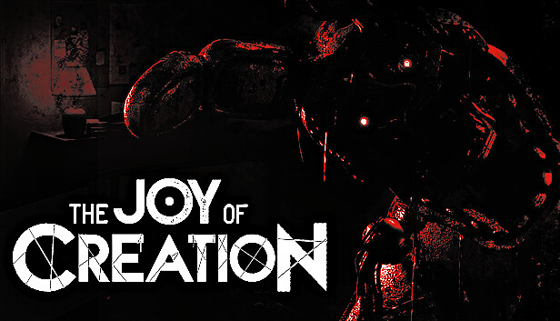

*The Joy of Creation* (TJoC) is one of the scariest fan games of *Five Nights at Freddy's*. Created by Nikson, the game places the player in different survival scenarios while facing corrupted and terrifying versions of the animatronics.
The game features several stages, each with a unique gameplay style: from escaping animatronics in a domestic environment to surviving in outdoor locations. Each stage requires different strategies to succeed.